Function, structure, operation of security and locks control (Passive Entry and Start System)
1. Function, structure, operation of security and locks control
Outline of Passive Entry and Start System (PESS)
PESS is a system that enables doors to be locked/unlocked and for the engine to be started by carrying the electronic key without the need for the mechanical key to be inserted. This system consists of the following components and controls PESS functions, keyless entry functions and immobilizer functions.
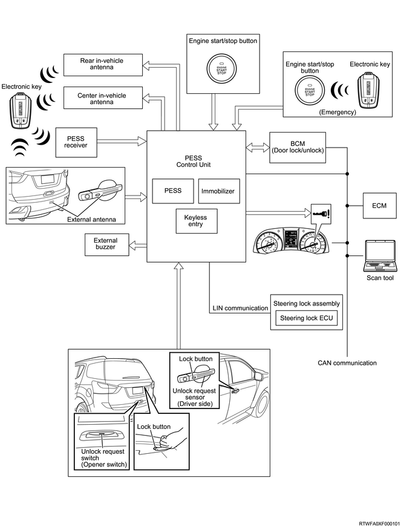
PESS function
With the electronic key within 80 cm (32 in) of the outside handle or tailgate, the doors will unlock when the outside handle is gripped or when the tailgate opener switch is pressed. Under the same conditions, the doors will lock when the outside handle or the tail gate lock button is pressed. Locking and unlocking the doors using the PESS function is only possible with the power mode (ignition switch) OFF.
If the outside handle is gripped, the tailgate opener switch is pressed, the outside handle lock button is pressed, or the tailgate lock button is pressed, the PESS control unit will send radio signals from the external antenna to the electronic key. After receiving these radio signals, the electronic key will send radio signals to the PESS receiver. When the PESS receiver receives the radio signals, the PESS control unit will output unlocking/locking commands to the BCM. The BCM forces the door lock actuator to operate, unlocking/locking the door.
Schematic drawing of unlocking/locking using the PESS function
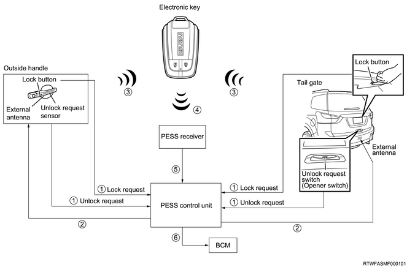
Range in which unlocking/locking using the PESS function is possible
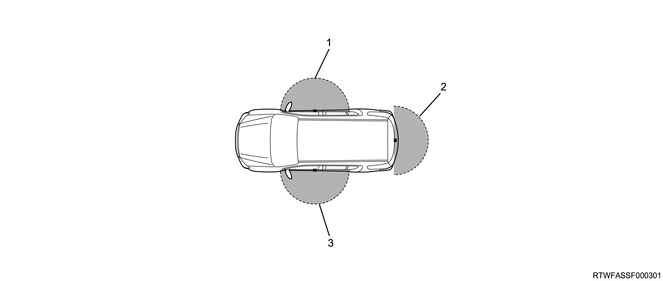
- Operating range for locking and unlocking the driver side door handle (RHD)
- Operating range for locking and unlocking the tail gate
- Operating range for locking and unlocking the driver side door handle (LHD)
Keyless entry function
Locking/unlocking of the doors is possible using the lock button/unlock button on the electronic key within 10 m (approximately 33 ft) of the center of the vehicle.
If the unlock button or lock button of the electronic key is pressed, the electronic key sends radio signals to the PESS receiver. When the PESS receiver receives radio signals, the PESS control unit will output unlocking/locking commands to the BCM. The BCM forces the door lock actuator to operate, carrying out unlocking/locking operations.
Schematic drawing of unlocking/locking using the keyless entry function
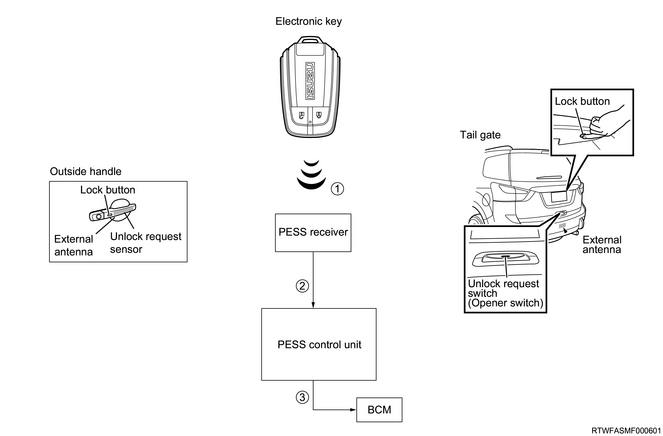
Range in which unlocking/locking using the keyless entry function is possible
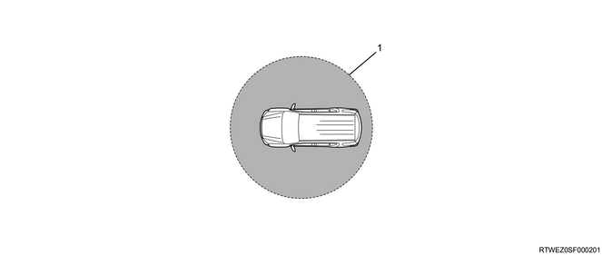
- Operating range for locking and unlocking
Immobilizer function
The engine is started by operating the engine start/stop button when the electronic key is in the vehicle. If the electronic key is not authenticated by the PESS control unit and ECM, the engine cannot be started.
When the engine start/stop button is pressed, the PESS control unit sends radio signals from the center in-vehicle antenna, rear right in-vehicle antenna, and rear left in-vehicle antenna to the electronic key. After receiving these radio signals, the electronic key will send radio signals to the PESS receiver. When the PESS receiver receives the radio signals, the PESS control unit will start to authenticate with the electronic key. When authentication is completed, the PESS control unit starts to authenticate with the steering lock assembly. When authentication is completed, the steering lock assembly is released.
When the power mode turned "ON", the PESS control unit will start authentication with the ECM. When authentication is completed, the PESS control unit sends the starter ON signal and starts the engine.
Engine startup condition
The engine can be started by operating the engine start/stop button for the following.
M/T models
Set the shift lever to the "N" position.
Depress the clutch pedal.
Press the engine start/stop button.
A/T models
Set the selector lever to the "P" or "N" position.
Depress the brake pedal.
Press the engine start/stop button.
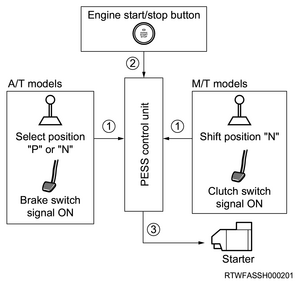
Note
- If the steering lock is not released, the engine cannot be started.
Schematic drawing of immobilizer functions (PESS)
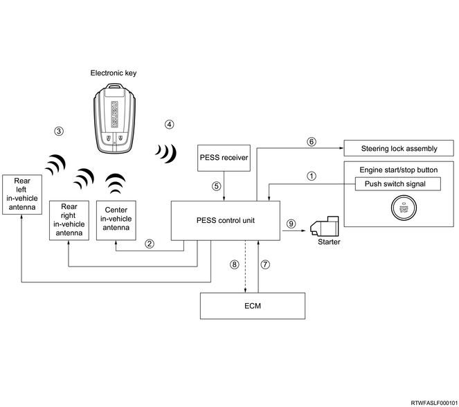
Range in which the engine can be started using immobilizer functions (PESS) is possible
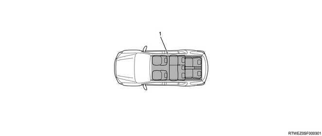
- Operating range for starting the engine
PESS authentication by transponder (electronic key)
If starting the engine becomes impossible for some reason (drained electronic key battery, etc.), place the electronic key built into the transponder near the engine start/stop button and authenticate with the PESS control unit, then the engine can be started by pressing the engine start/stop button. When using the transponder to start the engine, authentication is performed between the transponder and the PESS control unit, as well as between the PESS control unit and the ECM.
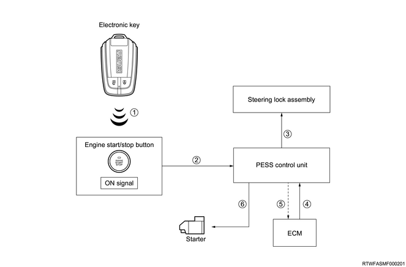
Emergency function
Emergency stop
Press and hold the engine start/stop button for 3 seconds or more.
Press the engine start/stop button three times within 2 seconds.
The engine can be stopped during start-up by performing either of the above operations.
Emergency starting
The engine may be started by operating the engine start/stop button for the following.
Caution
- Ensure the safety of the surrounding area in case unexpected vehicle behavior occurs when starting the engine.
M/T models
The power mode is ACC.
Set the shift lever to the "N" position.
Depress the clutch pedal.
Press and hold the engine start/stop button for 15 seconds or more.
A/T models
The power mode is ACC.
Set the selector lever to the "P" or "N" position.
Depress the brake pedal.
Press and hold the engine start/stop button for 15 seconds or more.
Note
- After switching to ACC, operate within 5 minutes.
Power mode switching function
The mode is switched as shown in the following diagram by operating the engine start/stop button on each operation.
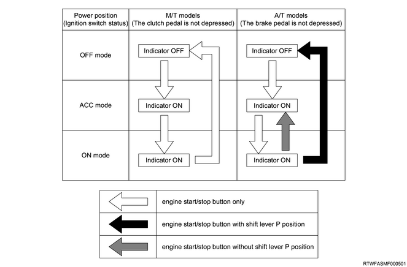
Battery protection function
If 60 minutes or more have passed in ACC, turn the power mode OFF in order to protect the battery.
Note
- For A/T models, do not turn OFF if the selector lever is in a position other than "P".
Parts layout diagram
The Passive Entry and Start System (PESS) consists of the following parts:
Note
- RHD
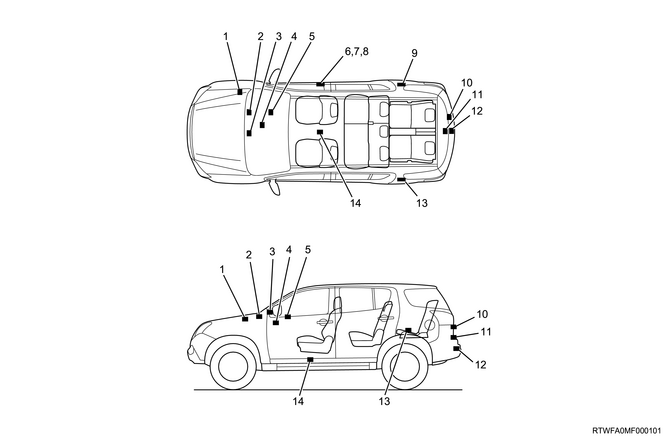
- External buzzer
- Passive entry and start system (PESS) control unit
- PESS receiver
- Engine start/stop button
- Steering lock assembly
- Unlock request sensor
- Lock button (Lock request switch)
- External antenna (Outside handle)
- Rear right in-vehicle antenna
- Tailgate lock button (Lock request switch)
- Tailgate opener switch (Unlock request switch)
- External antenna (Tailgate)
- Rear left in-vehicle antenna
- Center in-vehicle antenna
Note
- LHD
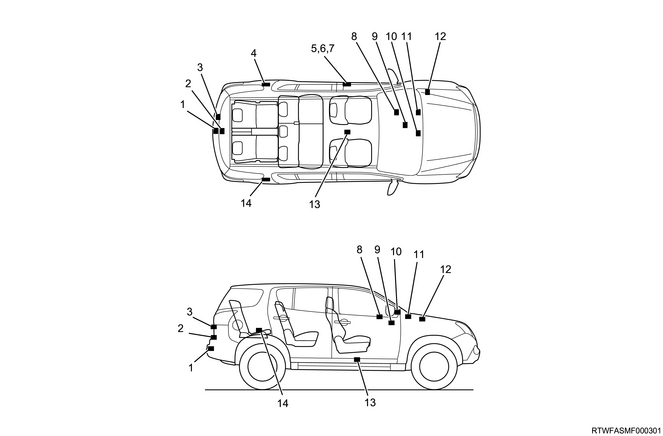
- External antenna (Tailgate)
- Tailgate opener switch (Unlock request switch)
- Tailgate lock button (Lock request switch)
- Rear left in-vehicle antenna
- External antenna (Outside handle)
- Lock button (Lock request switch)
- Unlock request sensor
- Steering lock assembly
- Engine start/stop button
- PESS receiver
- Passive entry and start system (PESS) control unit
- External buzzer
- Center in-vehicle antenna
- Rear right in-vehicle antenna
Passive Entry and Start System (PESS ECU) control unit circuit diagram
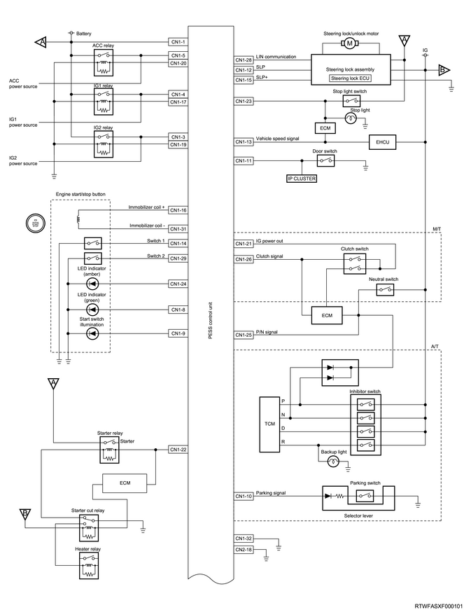
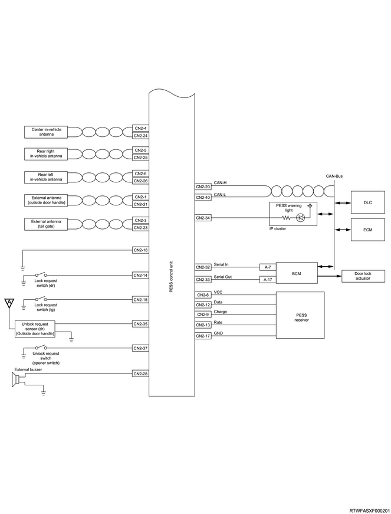
Passive Entry & Start System (PESS) control unit
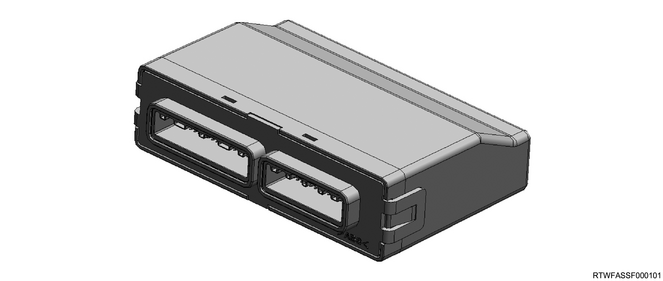
Passive Entry & Start System (PESS) control unit connector pin layout
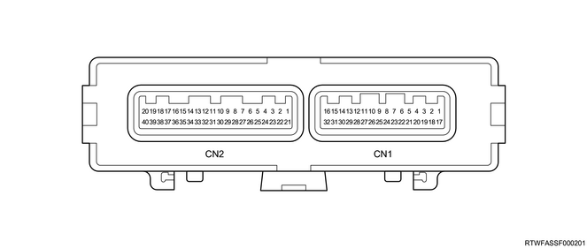
| CN1 (B-62) connector | |||
| PIN No. | Pin function | PIN No. | Pin function |
| 1 | Battery power supply | 17 | IG1 relay control |
| 2 | - | 18 | - |
| 3 | IG2 feedback signal | 19 | IG2 relay control |
| 4 | IG1 feedback signal | 20 | ACC relay control |
| 5 | ACC feedback signal | 21 | Clutch output signal (M/T) |
| 6 | - | 22 | Starter relay control |
| 7 | - | 23 | Stop light switch signal |
| 8 | Engine start/stop button LED indicator (green) | 24 | Engine start/stop button LED indicator (amber) |
| 9 | Engine start/stop button illumination | 25 | P/N position switch signal (A/T) |
| Neutral switch signal (M/T) | |||
| 10 | Parking signal | 26 | Clutch input signal (M/T) |
| 11 | - | 27 | - |
| 12 | Steering lock position | 28 | LIN communication |
| 13 | Vehicle speed signal | 29 | Engine start/stop switch 2 signal |
| 14 | Engine start/stop switch 1 signal | 30 | - |
| 15 | Steering lock operating permission switch | 31 | Immobilizer coil (-) |
| 16 | Immobilizer coil (+) | 32 | Signal ground |
| CN2 (B-61) connector | |||
| PIN No. | Pin function | PIN No. | Pin function |
| 1 | External antenna (+) (Outside handle) | 21 | External antenna (-) (Outside handle) |
| 2 | - | 22 | - |
| 3 | External antenna (+) (Tail gate) | 23 | External antenna (-) (Tail gate) |
| 4 | Center in-vehicle antenna (+) | 24 | Center in-vehicle antenna (-) |
| 5 | Rear RH in-vehicle antenna (+) | 25 | Rear RH in-vehicle antenna (-) |
| 6 | Rear LH in-vehicle antenna (+) | 26 | Rear LH in-vehicle antenna (-) |
| 7 | - | 27 | - |
| 8 | PESS receiver 5 V power supply | 28 | External buzzer control |
| 9 | PESS receiver CHARGE signal | 29 | - |
| 10 | - | 30 | - |
| 11 | Door switch signal | 31 | - |
| 12 | PESS receiver DATA signal | 32 | BCM input signal |
| 13 | PESS receiver RATE signal | 33 | BCM output signal |
| 14 | Driver door side lock button signal | 34 | PESS warning light control |
| 15 | Tail gate lock request switch signal | 35 | Unlock request sensor signal |
| 16 | - | 36 | - |
| 17 | PESS receiver GND | 37 | Tail gate unlock request switch signal |
| 18 | Power ground | 38 | - |
| 19 | - | 39 | - |
| 20 | CAN high signal | 40 | CAN low signal |
Unlock request sensor
The unlock request sensor is built into the outside handle. All the doors will unlock when the outside handle is gripped and it has been verified that the electronic key is within range. The doors will relock if one of the doors is not opened within 30 seconds of unlocking. When unlocking the doors, the answerback buzzer (external buzzer) will sound twice and the hazard warning lights will flash twice.
Lock button (Lock request switch)
The lock button is on the outside handle. Locking the doors using the lock button is only possible with the power mode OFF. All the doors will lock when the lock button is pressed and it has been verified that the electronic key is within range. When locking the doors, the answerback buzzer (external buzzer) will sound once and the hazard warning lights will flash once.
External antenna (Outside handle)
The external antenna is built into the outside handle. If the outside handle is gripped or the outside handle lock button is pressed, the external antenna will send radio signals to the electronic key.
Outside handle (Unlock request sensor, external antenna, lock request switch)
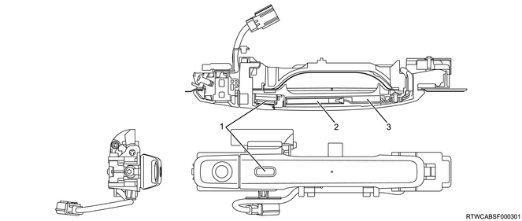
- Lock button
- External antenna
- Unlock request sensor
Outside handle (Unlock request sensor, External antenna, Lock request switch) connector pin layout
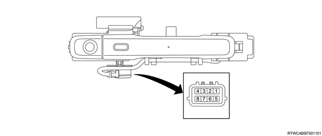
| PIN No. | Pin function | PIN No. | Pin function |
| 1 | External antenna (-) (Outside handle) | 5 | External antenna (+) (Outside handle) |
| 2 | Unlock request sensor signal output | 6 | - |
| 3 | Unlock request sensor GND | 7 | Unlock request sensor power supply |
| 4 | Lock request switch signal | 8 | Lock request switch GND |
Tail gate opener switch (Unlock request switch)
The unlock request switch is built into the tail gate opener switch. All the doors and the tail gate will unlock when the tail gate opener switch is pressed and it has been verified that the electronic key is within range. The doors will relock if one of the doors is not opened within 30 seconds of unlocking. When unlocking the doors, the answerback buzzer (external buzzer) will sound twice and the hazard warning lights will flash twice.
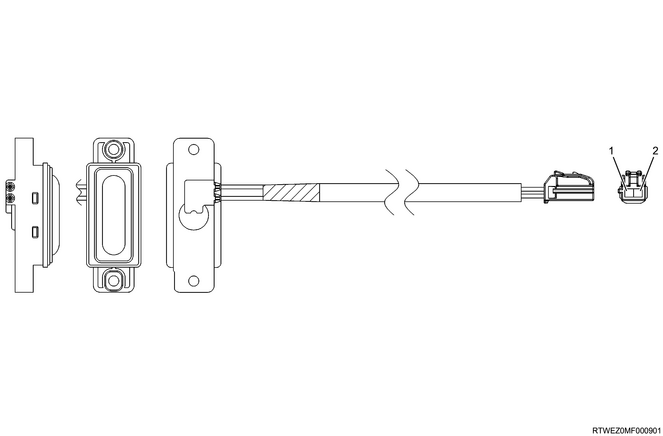
| PIN No. | Pin function |
| 1 | Tail gate unlock request switch signal |
| 2 | Tail gate unlock request switch GND |
Tail gate lock button (Lock request switch)
The tail gate lock button is on the tail gate. Locking the doors using the tail gate lock button is only possible with the power mode OFF. All the doors will lock when the tail gate lock button is pressed and it has been verified that the electronic key is within range. When locking the doors, the answerback buzzer (external buzzer) will sound once and the hazard warning lights will flash once.
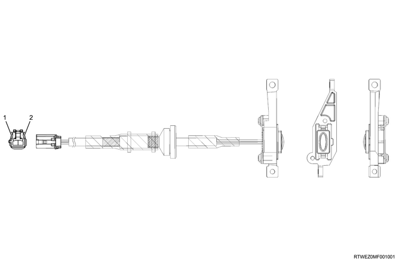
| PIN No. | Pin function |
| 1 | Tail gate lock request switch signal |
| 2 | Tail gate Lock request switch GND |
External antenna (Tail gate)
The external antenna is installed to the rear bumper support. If the tail gate opener switch or tail gate lock button is pressed, the external antenna will send radio signals to the electronic key.
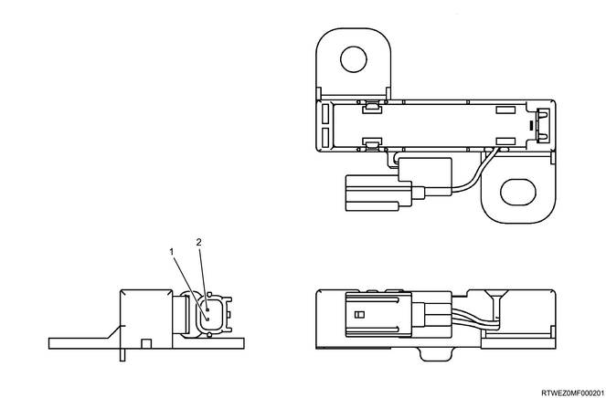
| PIN No. | Pin function |
| 1 | External antenna (+) (Tail gate) |
| 2 | External antenna (-) (Tail gate) |
In-vehicle antenna
The center in-vehicle antenna is installed to the back side of the center console, and the rear in-vehicle antennas are installed to the back side of the rear right and left trim covers. When the engine start/stop button is pressed, the PESS control unit sends radio signals from the rear in-vehicle antenna and center in-vehicle antenna to the electronic key.
Center in-vehicle antenna
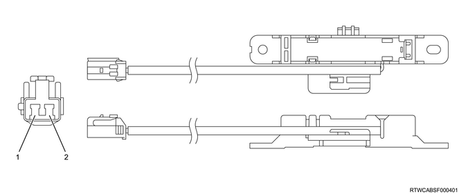
| PIN No. | Pin function |
| 1 | Center in-vehicle antenna (-) |
| 2 | Center in-vehicle antenna (+) |
Rear in-vehicle antenna
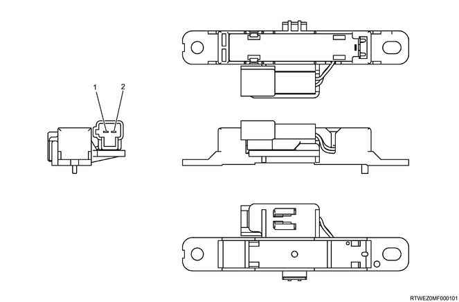
| PIN No. | Pin function |
| 1 | Rear in-vehicle antenna (+) |
| 2 | Rear in-vehicle antenna (-) |
PESS receiver
The PESS receiver is installed within the instrument panel. The PESS receiver receives radio signals sent from the electronic key. Received signals are then sent to the PESS control unit.
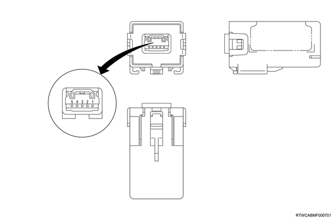
| PIN No. | Pin function |
| 1 | 5 V power supply |
| 2 | DATA signal |
| 3 | CHARGE signal |
| 4 | RATE signal |
| 5 | GND |
Electronic key
By carrying the electronic key, it is possible to lock/unlock doors and start the engine without inserting a mechanical key. It is also possible to lock/unlock doors using the lock button and unlock button on the electronic key.
If starting the engine becomes impossible for some reason (drained electronic key battery, etc.), place the electronic key built into the transponder near the engine start/stop button and press the engine start/stop button to start the engine. If the engine start/stop button is pressed, the engine start/stop button LED indicator will begin to flash. Place the electronic key near the engine start/stop button when the LED indicator is flashing to authenticate with the PESS, and then the buzzer will sound. The engine is started by pressing the engine start/stop button within 10 seconds after the LED indicator starts to slowly flash after authentication. If authentication is not performed or the engine start/stop button is not pressed within 10 seconds after authentication, the engine start/stop button LED indicator will turn OFF. It is possible to register a maximum of 5 electronic keys. The battery life of the electronic key is approximately 1 to 2 years, though it varies depending on usage conditions.
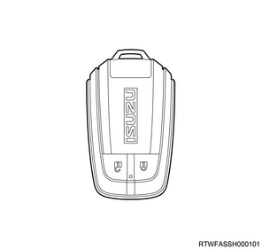
Mechanical key
The mechanical key can lock/unlock doors only. The engine is started via electronic key.
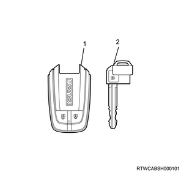
- Electronic key
- Mechanical key
Engine start/stop button, steering lock assembly
The engine start/stop button is used to switch the power mode to "ACC" or "ON" and to start the engine. When the engine start/stop button is pressed, the PESS control unit starts authentication with the electronic key. When authentication is completed normally, the PESS control unit starts authentication with the steering lock assembly. When authentication is completed normally, the steering lock assembly is released.
When the power mode turned "ON", the PESS control unit will start authentication with the ECM. When authentication is completed, the PESS control unit sends the starter ON signal and starts the engine.
If starting the engine becomes impossible for some reason (drained electronic key battery, etc.), place the electronic key built into the transponder near the engine start/stop button, and the PESS authentication will start. When authentication is completed normally, the engine can be started by pressing the engine start/stop button.
Engine start/stop button

| PIN NO. | Pin function | PIN NO. | Pin function |
| 1 | - | 8 | Immobilizer coil (-) |
| 2 | Start switch 2 signal | 9 | Immobilizer coil (+) |
| 3 | - | 10 | - |
| 4 | Start switch 2 GND | 11 | Start switch illumination |
| 5 | Start switch 1 / LED GND | 12 | LED indicator (green) |
| 6 | - | 13 | LED indicator (amber) |
| 7 | Start switch 1 signal | 14 | - |
Steering lock assembly
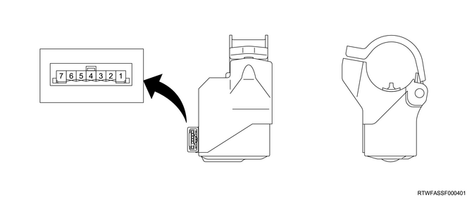
| PIN No. | Pin function |
| 1 | GND |
| 2 | - |
| 3 | Steering lock operating permission switch |
| 4 | Steering lock position |
| 5 | LIN communication |
| 6 | Ignition power supply |
| 7 | Battery power supply |
External buzzer
The external buzzer is installed within the engine room. When locking the doors, the external buzzer (answerback buzzer) will sound once and the hazard warning lights will flash once. When unlocking the doors, the external buzzer (answerback buzzer) will sound twice and the hazard warning lights will flash twice. External buzzer (answerback buzzer) operation/non-operation, as well as volume settings, can be changed with a scan tool. The external buzzer also has the function of a warning buzzer and will generate a warning sound when the PESS issues a warning.
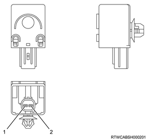
| PIN No. | Pin function |
| 1 | GND |
| 2 | Buzzer signal |
PESS warning light
If a malfunction occurs in the passive entry and start system (PESS), the PESS warning light will illuminate or blink, and informs the driver of malfunctions in the system.
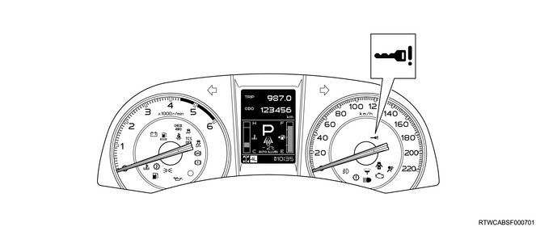
Regarding warnings issued by the passive entry and start system (PESS)
Under the following circumstances, the PESS control unit will generate a warning sound from the buzzer embedded in the IP cluster and from the external buzzer.
| Multi-display Warning | Buzzer pattern | Condition |
| NO ELECTRONIC KEY | Continuous beep (external buzzer) | If locking an unlocked vehicle is attempted with the electronic key not within operating range for locking and unlocking the vehicle. |
| Short repeated beeps (in-vehicle buzzer) | If the electronic key is carried outside the vehicle and then the doors or tailgate are closed with the power mode in "ACC" or "IG". | |
| Short repeated beeps (external and in-vehicle buzzer) | ||
| Three repeated beeps (in-vehicle buzzer) | If the engine start/stop button is pushed with the electronic key not within operating range for starting the engine. | |
| PUSH START BUTTON WHILE TURNING STEERING WHEEL | Three repeated beeps (in-vehicle buzzer) | If the steering lock is not released even though the engine start/stop button is pushed. |
| DOOR OPEN | Short repeated beeps (external buzzer) | If vehicle locking is attempted by pressing the lock button on the driver side door handle, tailgate, or electronic key when the doors or tailgate are open. |
| SHIFT TO P | Three repeated beeps (in-vehicle buzzer) | If engine starting is attempted by pushing the engine start/stop button with the selector lever in a position other than "P" or "N" (automatic transmission models). |
| SHIFT TO N | Three repeated beeps (in-vehicle buzzer) | If engine starting is attempted by pushing the engine start/stop button with the gearshift lever in a position other than "N" (manual transmission models). |
| TO POWER OFF SHIFT TO P THEN PUSH START BUTTON | Three repeated beeps (in-vehicle buzzer) | If an attempt to switch the power mode from "IG" to "OFF" is made with the selector lever in a position other than "P" (automatic transmission models). |
| SHIFT TO P | Continuous beep (external buzzer) | If the electronic key is carried outside the vehicle and then the doors or tailgate are closed with the power mode in the "OFF" position and the selector lever in a position other than "P" (automatic transmission models). |
| Continuous beep (in-vehicle buzzer) | If the selector lever is moved to a position other than "P" with the driver side door open (automatic transmission models). | |
| Short beep (external buzzer) | If vehicle locking is attempted by pressing the lock buttons on the driver side door handle, tailgate, or electronic key with the selector lever in a position other than "P" (automatic transmission models). | |
| ACCESSORY MODE | Continuous beep (in-vehicle buzzer) | If the driver side door is opened with the power mode in "ACC". |
| TURN OFF THE POWER | Short beep (external buzzer) | If vehicle locking is attempted by pressing the lock button on the driver side door handle, tailgate, or electronic key with the power mode in "IG" or "ACC". |
| LOW BATTERY ELECRONIC KEY | Three repeated beeps (in-vehicle buzzer) | If the battery voltage of the electronic key is low when the power mode is switched from "IG" to "OFF" (or "ACC"). |
| CHECK SYSTEM | Three repeated beeps (in-vehicle buzzer) Continuous beep (in-vehicle buzzer) | If an error occurs to the PESS when vehicle locking is attempted by pressing the lock button on the driver side door handle or tailgate, or by pushing the engine start/stop button. |
| Short beep (external buzzer) Continuous beep (external buzzer) | ||
| POWER MANAGEMENT SYSTEM ERROR | Three repeated beeps (in-vehicle buzzer) | If an error occurs in the power management system when the engine start/stop button is pushed. |
| STEERING LOCK ERROR | Three repeated beeps (in-vehicle buzzer) | If an error occurs in the steering lock system when the engine start/stop button is pushed. |
| Lockout prevention (No multi-display warning) | Short beep (external buzzer) | If door locking is attempted by pressing the lock button on the driver side door handle when the electronic key is inside the vehicle. |
Customize function
The following functions settings can be changed using a scan tool.
| Function | Description |
| Inner Buzzer Volume Setting | The buzzer volume output from the buzzer embedded in the IP cluster can be changed. The volume can be set to the 3 patterns of MAX, MIDDLE, and LOW. The default volume setting is MAX. |
| Outer Buzzer Volume Setting | The buzzer volume output from the external buzzer can be changed. The volume can be set to the 3 patterns of MAX, MIDDLE, and LOW. The default volume setting is MAX. |
| Driver Out Side Door Knob Button Function | The outside handle lock button and tail gate lock button that are usually used for locking can be also be used for unlocking. [Unlock with 2 second long press], [Unlock without regard to number of seconds], or [Only lock] can be set. The initial setting is [Unlock with 2 second long press]. |
| Tail Gate Unlock Mode Setting | The operation/non-operation of the answerback can be set for the tail gate along with each door when unlocking. |
| Answer Back Setting | The operation/non-operation of the answerback buzzer when locking and unlocking can be set. The answerback buzzer volume can be changed using "Outer Buzzer Volume setting". |
| ACC Auto Power OFF Timer Setting | The operation/non-operation of the ACC auto power off can be set. |